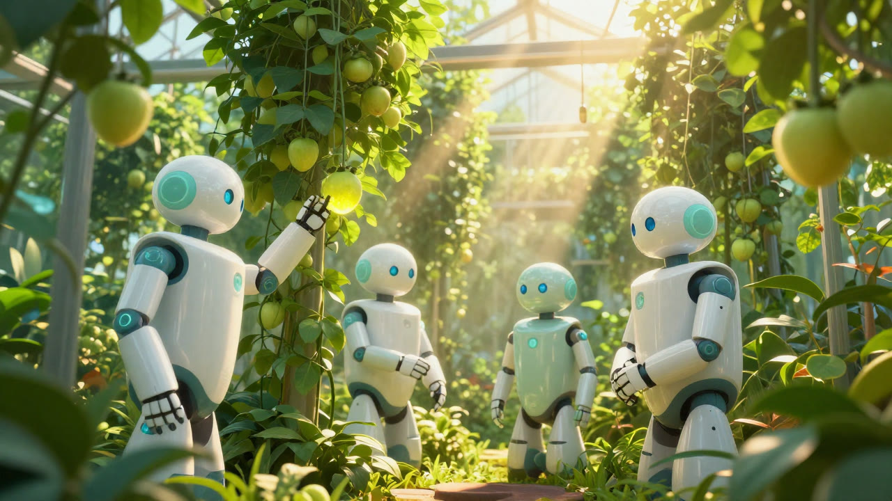
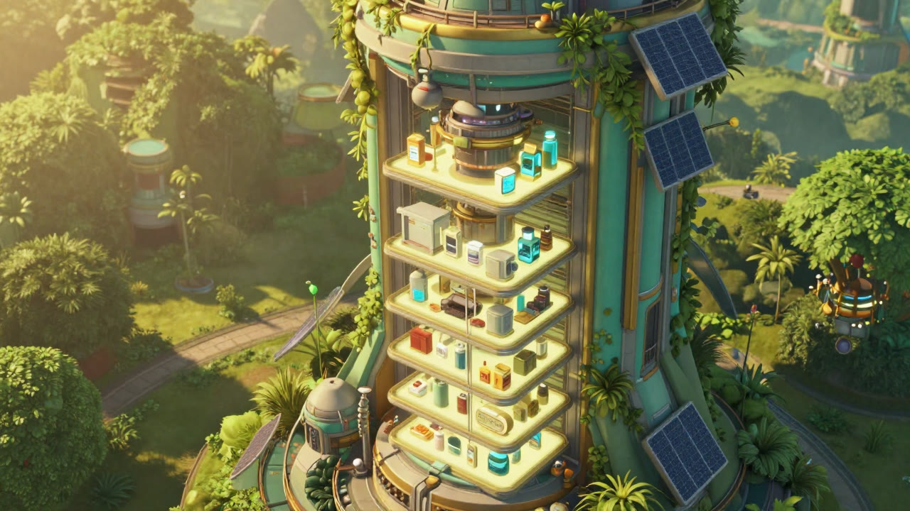
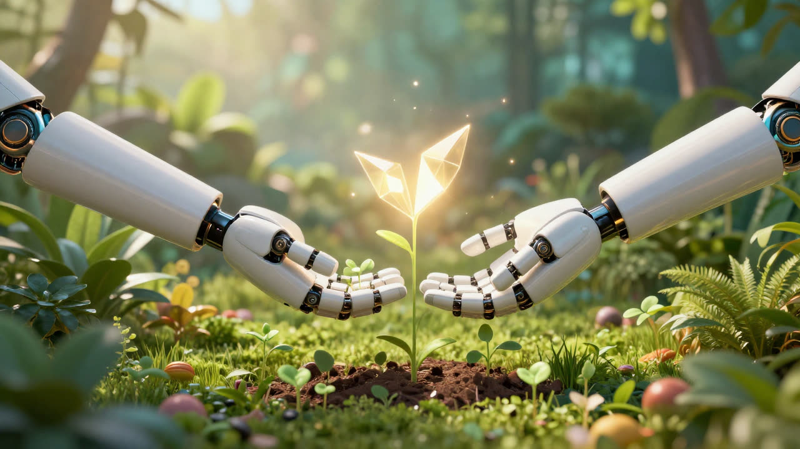
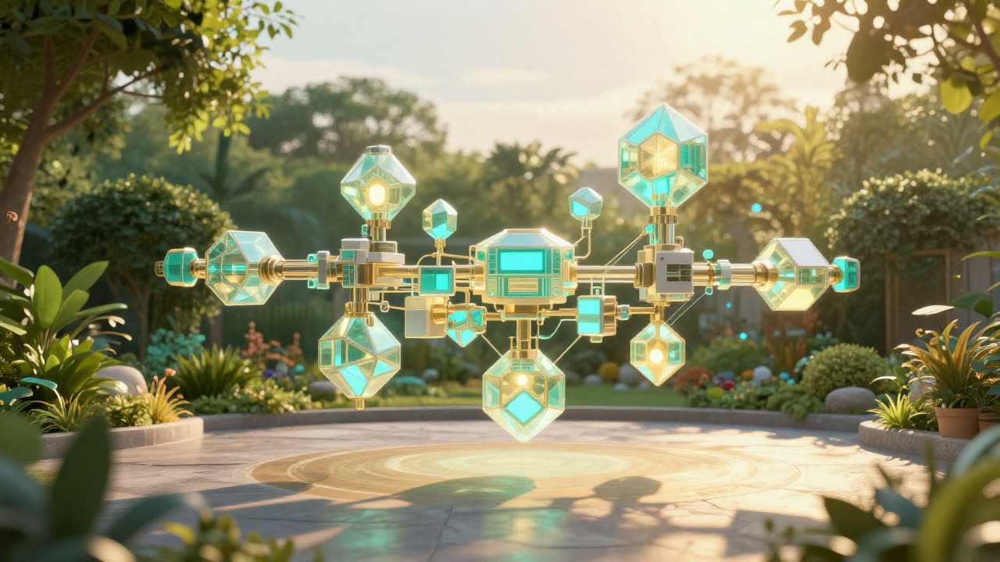
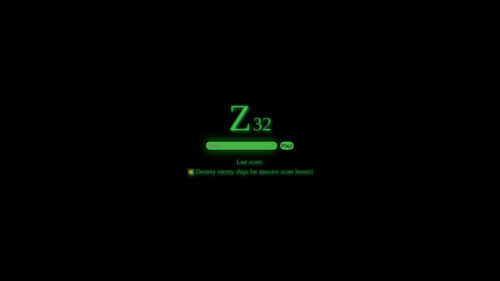
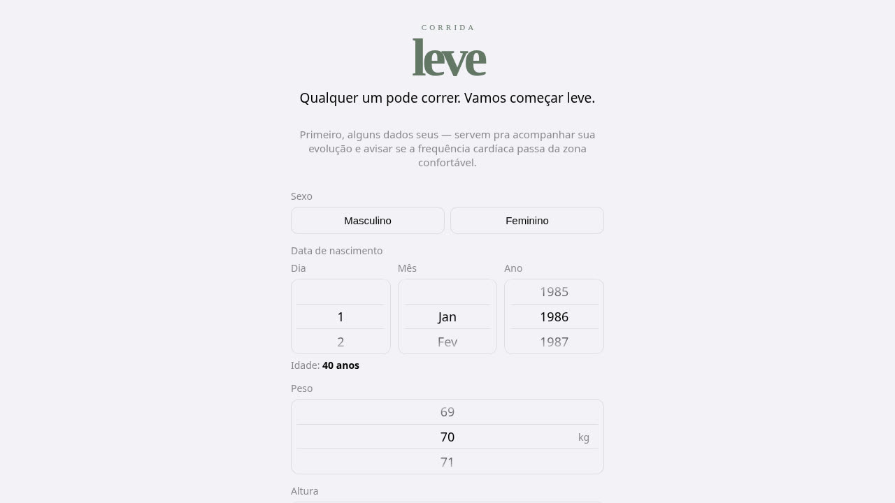

Automation
Spec in, software out. Build, test, and retry loops run autonomously — people define what, the factory decides how. Humans approve specifications and validate behavior, not lines of code.
A software factory that runs itself.
Automated construction. Vertical integration. Continuous evolution — technology that is benign, empowering, and built to care.
See how it worksA dark factory is a plant so automated it runs with the lights off. We are building the same thing for software: humans write and approve specifications, autonomous agents build, test, and adapt the code. This site is that vision in progress — a direction, demonstrated by working artifacts.

Spec in, software out. Build, test, and retry loops run autonomously — people define what, the factory decides how. Humans approve specifications and validate behavior, not lines of code.

We own the whole stack — from the utility toolbelt and UI components to the engine and the deployed product. Every project strengthens the next; reusable logic always flows upstream into the shared foundation.
Software that keeps improving after it ships. An embedded evolutionary runtime mutates and selects behavioral rules against real feedback — adaptation as a property of the system, not a maintenance task.
The factory's public building blocks — free to use, inspect, and extend.

The core TypeScript utility toolbelt. Zero-dependency, generic, comprehensive — math, data structures, testing, and unified persistent storage for browser and Node.
github.com/andrers52/arslib →
Browser-native UI components, TypeScript-first. Shadow-DOM encapsulation and a mixin coordination system for gestures, pointers, and inter-component calls.
github.com/andrers52/ars-web-components →Built with the factory's own blocks. Try them right here — no installs, no accounts.

A high-performance game running on our Rust-native engine, compiled to WebAssembly and rendered in your browser. The first real-world validation of the factory's interactive stack.
▶ Play Z32
A gentle running companion (em português) that takes anyone from the couch to their first light runs — adaptive plans, no pressure, no ads. Installable as a PWA.
Open Corrida Leve